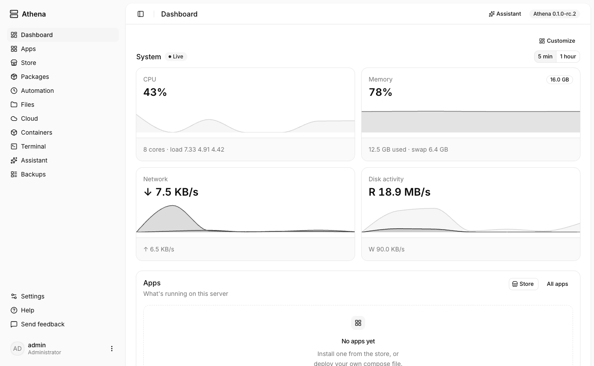

Dashboard
The home page shows how the server is doing right now, and the apps running on it.

- System: CPU, memory, network and disk activity, updated live. Switch the chart range between 5 minutes and 1 hour at the top right.
- Apps: a tile for each installed app with its status. Click one to open it. Store and All apps are shortcuts.
- Customize: choose which cards appear and in what order.
The header has a shortcut to the assistant and shows the Athena version. The sidebar lists every page; the user menu at the bottom has your account and sign-out.